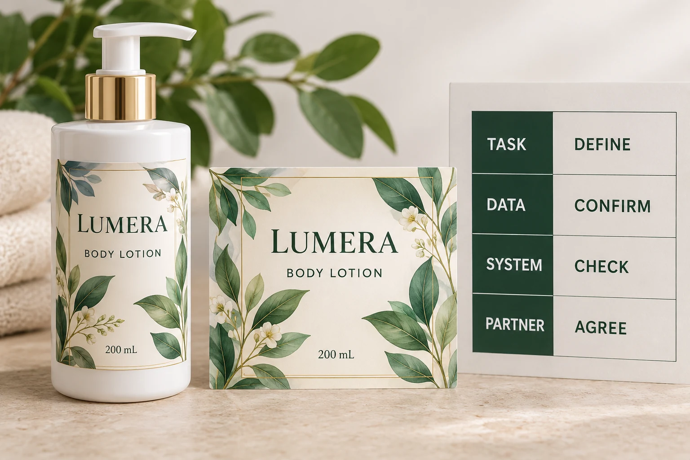

Describe what the scan must achieve
Start with a sentence that names the user and the expected result. A shopper opening an approved product page is one task. A retailer identifying the correct trade item at checkout is another. A warehouse reading information into its own system may introduce another set of requirements.
Ask which task the project actually needs. Do not buy a more elaborate identification arrangement just because the design brief says smart packaging. If several functions are required, identify them separately so the relevant owners can agree how they will be delivered.
For consumer web content, the QR destination approval guide addresses the encoded address, destination and maintenance owner. That still leaves open whether the same project has a trading-partner data requirement.
Name the carrier and encoded format together
GS1 US barcode-type guidance distinguishes QR Code and Data Matrix with GS1 Digital Link from GS1 DataMatrix. The names refer to specific arrangements; they should not be reduced to interchangeable square pictures.
Ask the responsible barcode or data specialist to specify both the chosen symbol and the encoded format for the required task. A web address placed in an ordinary QR code does not automatically establish an accepted point-of-sale identification arrangement.
The buyer does not need to invent the syntax. The buyer does need an accountable source for the data and a recipient who confirms what its system accepts. Give the artwork operator that approved specification rather than asking them to guess from a screenshot.
Check the actual receiving environment
Obtain the partner's current requirements for the intended use. Identify the relevant system or process, the required data and any coexistence arrangement with existing codes. Ask who can confirm acceptance and what evidence the partner expects before release.
GS1 US retailer transition guidance discusses dual marking during the transition and continued UPC acceptance. Its US roadmap is not a legal deadline for every retailer in the US, UK, Canada and Australia. Nor does it prove that a particular receiving site is ready today.
Avoid changing artwork around an assumed global switchover. Record the named partner's actual instruction and the date it was confirmed. When that instruction remains unclear, retain the question in the release record rather than treating general industry direction as project approval.
Build the brief in the order the decision needs
Use this worksheet with the brand's data owner and relevant receiving partner. Each row supplies an input for the next decision.
| Decision | Input to obtain | What must not be inferred |
|---|---|---|
| Scan task | Intended user, process and required result | A square code does not define its purpose |
| Data | Approved product identifiers, fields or web content route | A familiar image does not establish its encoded data |
| Carrier and format | Specialist's exact specification | QR Code and GS1 DataMatrix are not names to swap casually |
| Receiving system | Partner's requirements and responsible contact | Phone decoding does not establish system acceptance |
| Transition | Required existing symbols and coexistence instructions | General roadmaps do not permit deleting the old code |
| Artwork | Reserved area and released file | A digital proof does not demonstrate physical readability |
| Verification | Agreed checks and identified printed pack | One successful demonstration does not cover every system |
Resolve task and data before using available label space as the deciding factor. If the specified arrangement will not fit the intended artwork, bring that constraint back to the responsible parties. They may need to revise the layout or requirements; shrinking a symbol without review is not a complete solution.

Let a simple project stay simple
A hypothetical promotional run only needs a shopper to reach an approved web page. A clearly defined link and an appropriate physical-code review may address that brief. There is no reason to describe it as a retail identification upgrade without an actual requirement.
A different project must serve a retailer's specified transaction process. Its carrier, data format and acceptance route follow that requirement, even if marketing also wants a web experience. A phone opening a page is useful evidence for the web task, but it does not settle the retailer's task.
Where one arrangement is intended to serve both, have the specialists confirm both outcomes. Do not collapse the records into a single scan passed checkbox. The practical benefit is knowing which function remains unresolved before committing the whole label order.
Release the artwork after the system decision
Our finished-bottle barcode checklist covers the separate physical review. Connect those checks to the approved data, layout and intended container. This guide supplies no universal symbol dimensions, verification grade or promise that any proposed code will scan.
For custom cosmetic bottle labels, send the container, label dimensions, quantities and the approved carrier/data specification. Identify any required existing symbol and any pending partner acceptance. Use the inquiry form to draft your message; send artwork and specification files by email or WhatsApp. The form does not upload attachments. Have the printer acknowledge the matched artwork while the responsible data and receiving-system owners retain their respective approvals.